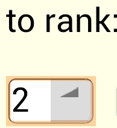
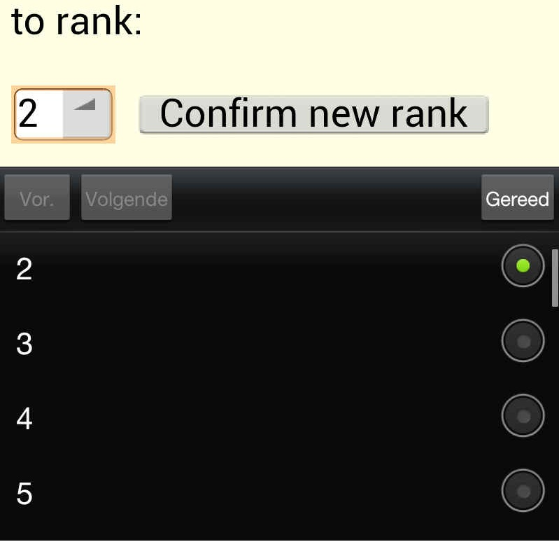

Help page of the JukeboxIn4Th.
Content:
I) The web interface.
II) Options on the status page.
I) The web interface.
The web interface of the JukeboxIn4Th allows you to search
remotely in a music collection of the JukeboxIn4Th. That can be done on a HTML-device
through the internet or on your local network. As soon as there
is a connection to the webserver it should work. The
administrator of the PC on which the JukeboxIn4Th runs should be able to tell or sms you
the link to the system.
The layout of the HTML-pages are adapted for small devices. A mobile phone with a screen of 4.5 inches or more should be able to handle the interface. There is no need for Java.
The first 2
options on the homepage can be used to search
for a song.
Just follow the hints to make a request or see a song.
New requests are added at the end of a que.
The que can be seen on the status page.
When a list or treeview appears there will be a link to the
bottom of the list.
II) Options on the status page:
1) See what song is playing. Refreshments can be
done by hand.
2) Stop or continue the music.
3) Skip the rest of a song and play the next
song in the que, when allowed.
4) Change the order of songs in the que by
hitting the button before the song.
When you hit a button before a song you will get a rank form
containing a drop-down list.
Under Android it might show up as follows:

As soon as you hit the button with the triangle it will open and
you will see the following screen:

Now you can scroll in the black part of the screen and activate
the option of your choise. Then hit the right button. (with
"Gereed" in this case) The black part will close.
Press the button "Confirm new rank" to activate the new
rank.
At all times you can hit the link JukeboxIn4Th to cancel an operation.